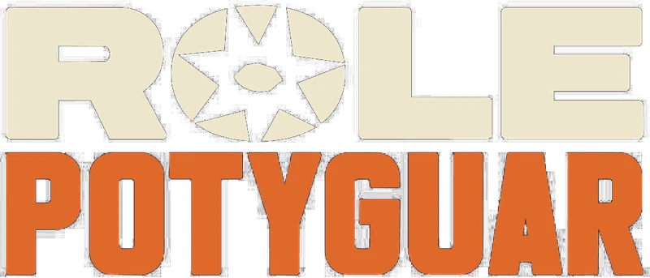
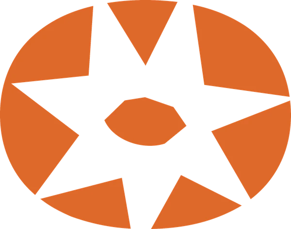
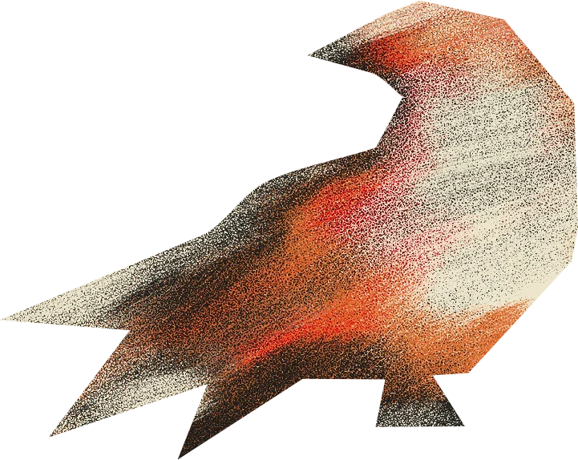

Não apenas levar pessoas ao Rio Grande do Norte. Levar o Rio Grande do Norte para as pessoas.
Experiência cultural, conteúdo e pertencimento no Rio Grande do Norte.
Site novo em curadoria. As novidades saem primeiro no Instagram.
É uma plataforma que une experiência, conteúdo e comunidade a partir de uma curadoria.
- Não é uma festa.
- Não é um perfil de conteúdo.
- Não é uma produtora de eventos.
A gente nasceu no Rio Grande do Norte e acredita que o potiguar tem sabor, som, textura e tato únicos. Sem caricatura, sem regionalismo fabricado.
Por isso, a gente seleciona, traduz e cria as experiências que valem a pena viver do RN.
Cultura é troca, não relação de observador e observado. Aqui, toda pessoa é recebida. E quando uma edição termina, o impacto não termina com ela.

Rolé Potyguar · Rio Grande do Norte
Nossa essência · Propósito
Exportar o potiguar com orgulho e excelência por meio de uma curadoria única.
Valores
O que orienta cada escolha
Autenticidade enraizada
Sem caricatura, sem regionalismo fabricado.
Sustentabilidade que transforma
Uma edição termina. O impacto não.
Excelência sem afetação
Sofisticação é atenção aos detalhes, não ostentação.
Acolhimento é produto
Toda pessoa deve se sentir recebida e incluída.
Local primeiro
Nascemos no RN e priorizamos nosso território.
Curadoria acima de escala
Escala não pode destruir o que torna o Rolé especial.
Cultura é troca
Não é relação de observador e observado.
- Cultura
- Música
- Gastronomia
- Território
- Turismo
- Modo de vida
- Comunidade
- Economia criativa
Perguntas frequentes
O Rolé, em poucas palavras
O que é o Rolé Potyguar?
O Rolé Potyguar é uma plataforma de experiência cultural, conteúdo e pertencimento no Rio Grande do Norte. A gente seleciona, traduz e cria as experiências que valem a pena viver no RN, unindo experiência, conteúdo e comunidade a partir de uma curadoria.
O Rolé Potyguar é uma festa ou uma produtora de eventos?
Não. O Rolé não é uma festa, não é um perfil de conteúdo e não é uma produtora de eventos. É uma plataforma que une experiência, conteúdo e comunidade a partir de uma curadoria.
Sobre quais temas o Rolé Potyguar fala?
Cultura, música, gastronomia, território, turismo, modo de vida, comunidade e economia criativa, sempre a partir do Rio Grande do Norte.
Onde o Rolé Potyguar atua?
O Rolé Potyguar é um movimento global. Nasceu no Rio Grande do Norte, valoriza o próprio território e acontece do RN para o mundo.
Quais são os valores do Rolé Potyguar?
Autenticidade enraizada, sustentabilidade que transforma, excelência sem afetação, acolhimento é produto, local primeiro, curadoria acima de escala e cultura é troca.
Como uma marca pode fazer parte do Rolé Potyguar?
Cada proposta é desenhada sob medida, a partir do desafio da marca. Os formatos incluem conteúdo de marca, experiência de marca, patrocínio, ativação com criadores, curadoria cultural, produção de conteúdo, cocriação de experiências, experiência de produto e hospitalidade. O contato é pelo e-mail contato@rolepotyguar.com.br.
Como acompanhar o Rolé Potyguar?
Pelo Instagram @rolepotyguar, onde as novidades saem primeiro.
O que está por vir
Vamos criar o próximo Rolé?
Os próximos capítulos do Rolé estão em curadoria.